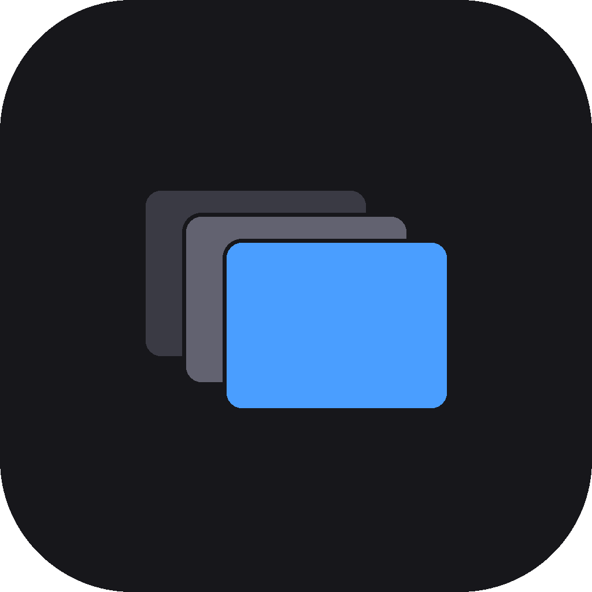

Sofric Sort
Sort event photos into driver albums.
Download latest versionOther versions and platforms · How to use it — upute
The first time you open it
Windows will show a blue box saying the publisher is unknown. That is expected — the app is not code-signed yet.
Click More info, then Run anyway.
It only asks once.
The first time you open it
Open the downloaded file and drag Sofric Sort into your Applications folder, then open it from there.
macOS will refuse the first time. Open System Settings → Privacy & Security, scroll down, and press Open Anyway.
If it still will not open, open Terminal and paste:
xattr -cr "/Applications/Sofric Sort.app"
It only asks once. The download works on both Apple Silicon and Intel Macs.
Before you start
Your photos are copied, never moved. The folder you point the app at is never changed, so nothing can be lost.
Press F1 inside the app to see every key.